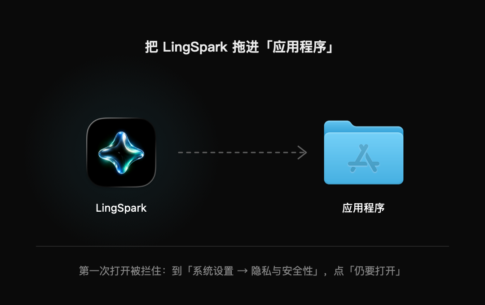
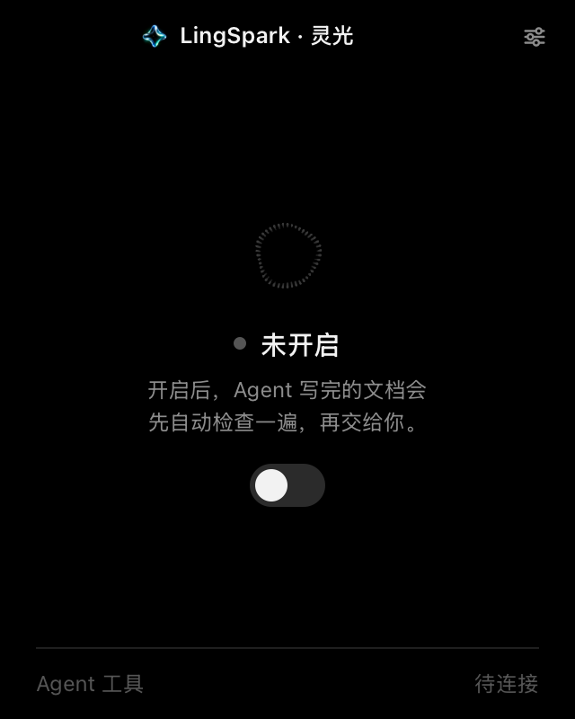
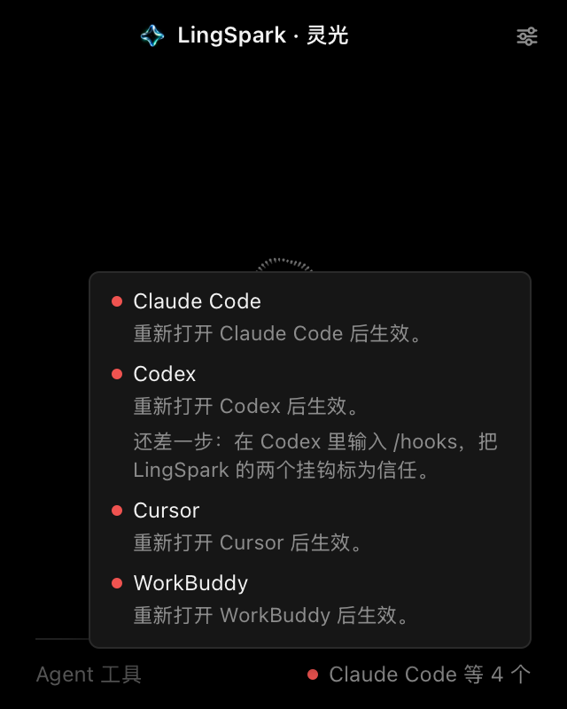
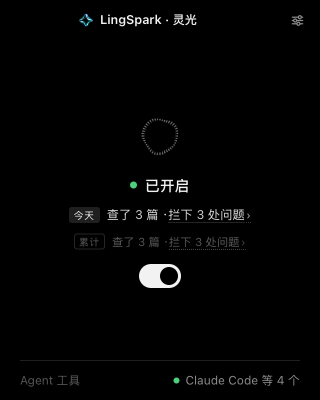
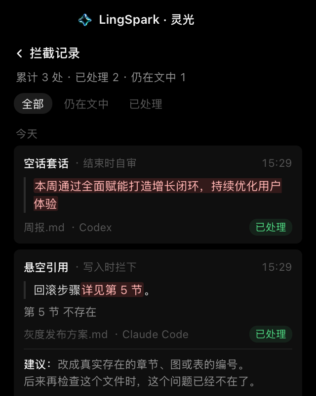
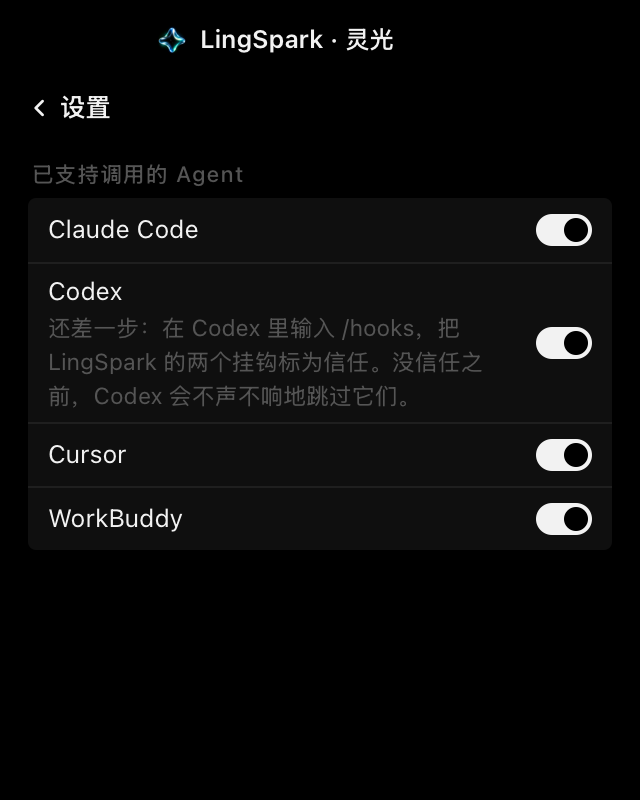

打开 LingSpark，首页只有一个开关。
把它打开就配置完了。灵光会自动找到你电脑上装过的 Agent（Claude Code、Codex、Cursor、WorkBuddy），把检查接进去。不用选文件夹、不用填 API Key、不用登录任何账号。
如果开关是灰的，说明没找到这四个 Agent 中的任何一个。装好并至少用过一次后，再打开灵光。
Agent 每写完一篇中文文档，灵光先替你检查一遍：前后数字对不上、引用了不存在的章节、空话套话、指代不明……发现了就让 Agent 当场改掉，改不了的标出来留给你拍板。
点页面顶部的下载按钮，会直接下载适合你这台电脑的安装包；也可以从 Releases 自己挑。
| 系统 | 下载 | 装法 |
|---|---|---|
| macOS Apple 芯片 / Intel，12 及以上 |
lingspark-…-mac.dmg |
双击打开，把 LingSpark 拖进「应用程序」 |
| Windows x64，10/11 |
lingspark-…-win-x64-setup.exe |
双击安装，会在开始菜单和桌面放一个入口 |
| Linux x64，Debian / Ubuntu / Mint |
lingspark_…_amd64.deb |
sudo apt install ./lingspark_…_amd64.deb |
| Linux x64，Arch / Fedora 等 |
lingspark-…-linux-x64.tar.gz |
解压后照里面的《安装说明.md》做，可以只装给自己 |
三个平台的客户端都不带浏览器内核，装好只占约 100MB，绝大部分是检查程序自己的运行环境。Windows 用系统自带的 Edge 内核开自己的窗口（没有这套内核的机器退回 Edge 的应用窗口），Linux 用系统自带的 Chromium 开自己的窗口，没有 Chromium 时会退回默认浏览器。

预览版没有做代码签名，三个系统都可能问一句。只有一次，做完以后不再问。
从网上、聊天软件下载的安装包，第一次打开时 macOS 会提示「Apple 无法验证"LingSpark"是否包含恶意软件」。
双击安装程序时，「Windows 防护」会提示未知发布者：点「更多信息」，再点「仍要运行」。装好之后第一次打开客户端同样会问一次。
用 apt install 或本地解压，不会触发签名检查，不需要额外操作。

打开 LingSpark，首页只有一个开关。
把它打开就配置完了。灵光会自动找到你电脑上装过的 Agent（Claude Code、Codex、Cursor、WorkBuddy），把检查接进去。不用选文件夹、不用填 API Key、不用登录任何账号。
如果开关是灰的，说明没找到这四个 Agent 中的任何一个。装好并至少用过一次后，再打开灵光。

Agent 只在启动时读取配置，所以刚接入的 Agent 要完全退出（⌘Q）再打开一次才会生效。
右下角的灯告诉你进度：
/hooks，把 LingSpark 的两个挂钩标为「信任」。没信任之前，Codex 会不声不响地跳过它们，灯会一直是红的。不需要改任何习惯。Agent 写出的每一篇 Markdown 文档，灵光都会在两个时间点检查：
| 什么时候 | 查什么 | 发现问题会怎样 |
|---|---|---|
| 刚写完一篇 | 数字前后对不上、引用了不存在的章节或表格、日期矛盾等，有明确对错的问题 | 当场把问题告诉 Agent，让它改 |
| 这一轮快结束时 | 空话套话、指代不明、结论没依据、几篇文档之间说法矛盾等，需要读懂意思的问题 | 请 Agent 按灵光给的标准自己审一遍：有把握的直接改，拿不准的标成「待确认」并问你 |
Agent 那边看到的是这样一段话，之后它会自己去改：
灵光自己不调用任何模型，也不上传你的文档：需要读懂意思的检查，是由正在写文档的那个 Agent 在自己的对话里完成的。

首页中间是统计：上面一行是今天，下面一行是累计。
点「拦下 N 处问题」就能看到具体拦下了哪些说法。点今天那行只看今天的，点累计那行看全部。
中间的光球开着时会慢慢变换形态；灵光正在检查文档时，它会停在「搜索」的样子。

每一条记录包括：
点开一条能看到修改建议，还可以直接打开那个文件。「仍在文中」的，通常是 Agent 拿不准、留给你判断的，值得看一眼。

点右上角的滑杆图标进入设置。每个 Agent 有单独的开关：不想让某个 Agent 被检查，关掉它就行，其他的不受影响。
首页的总开关关掉，等于把灵光从所有 Agent 里断开。
Agent 写出来的 Markdown 文档（.md），不管写在哪个文件夹。不检查你们的对话回复，也不检查 Agent 自己的记忆和指令文件（比如 CLAUDE.md、AGENTS.md、各 Agent 的配置目录）。Agent 用终端命令写的文件也会被检查。
不会。确定性的检查在你电脑上完成；需要读懂意思的检查，由你正在用的 Agent 在它自己的对话里完成，不经过灵光的任何服务器（灵光也没有服务器）。拦截记录只存在这台电脑上，最多保留最近 500 条。
Agent 会向你说明理由，你判断就好，不用照改。灵光要求 Agent 不要自己给文档加豁免注释，免得把真问题也一起放过。同一个问题在一次对话里被拦了三次还没改，之后这次对话就不再拦它。
/hooks 信任 LingSpark 的挂钩。大多数时候感觉不到：Agent 没写文档时，灵光几乎立刻放行。写了文档时，确定性的检查很快；结束时的自审会让 Agent 多花一点时间，把自己写的东西对照标准读一遍。
先在灵光首页把开关关掉（这会把检查从所有 Agent 的配置里移除），再把 LingSpark 从「应用程序」移到废纸篓。